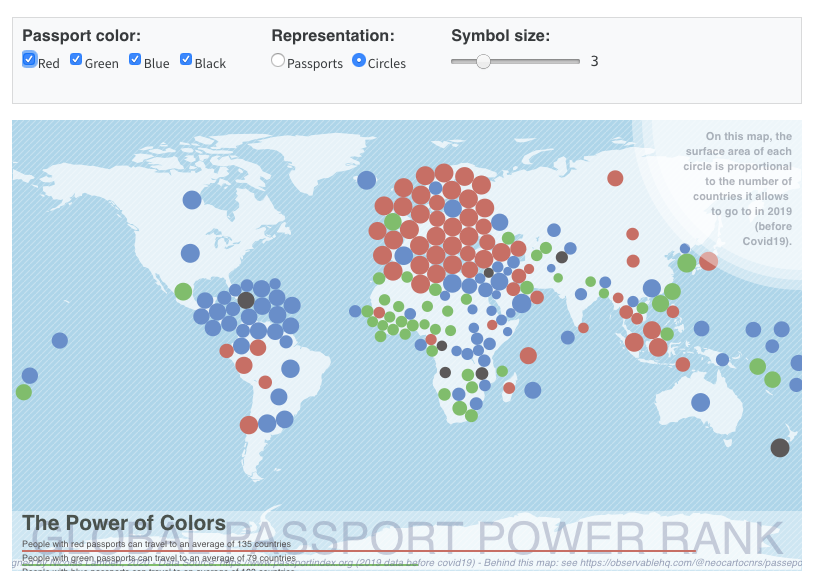
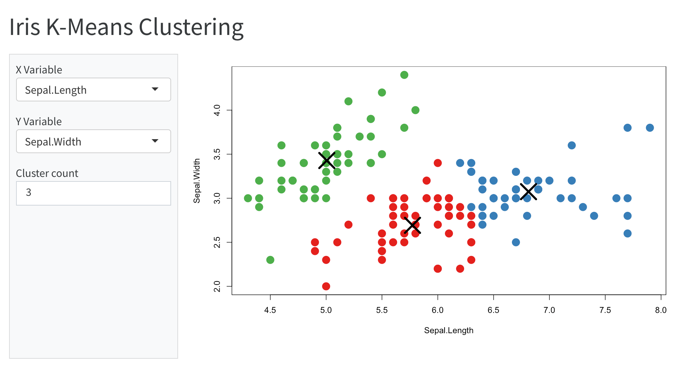
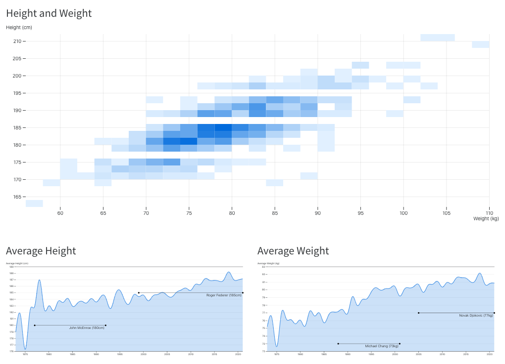

Component Layout
Overview
When you introduce interactive components into a document you’ll want to be sure to lay them out in a fashion that optimizes for readability and navigation.
There are of course a wide variety of ways you can incorporate interactivity spanning from visualizations embedded within a longer-form article all the way up to a more application/dashboard style layout. We’ll cover both of these layout scenarios below.
We’ll use examples from both Observable JS and Shiny interactive documents—if you aren’t familiar with the code/syntax used for a given example just focus on the enclosing layout markup rather than the application code.
Input Panel
If you have several inputs, you may want to group them inside an input panel (code block with option panel: input or div with class .panel-input). For example:

The inputs are grouped in a panel and laid out in three columns by adding the panel: input and layout-ncol: 3 options to the OJS code cell:
```{ojs}
//| panel: input
//| layout-ncol: 3
viewof ch = checkbox({
title: "Passport color:",
options: [
{ value: "red", label: "Red" },
{ value: "green", label: "Green" },
{ value: "blue", label: "Blue" },
{ value: "black", label: "Black" }
],
value: ["red", "green", "blue", "black"],
submit: false
})
viewof type = radio({
title: "Representation:",
options: [
{ label: 'Passports', value: 'p' },
{ label: 'Circles', value: 'c' }
],
value: 'p'
})
viewof k = slider({
title: "Symbol size:",
min: 1,
max: 10,
value: 3,
step: 1
})
```Tabset Panel
If you want to allow users to toggle between multiple visualizations, use a tabset (div with class .panel-tabset). Include a heading (e.g. ##) for each tab in the tabset.
For example, here are a plot and data each presented in their own tab:
Here is the markup and code used to create the tabset:
::: {.panel-tabset}
## Plot
```{ojs}
Plot.rectY(data,
Plot.stackY(
Plot.binX(
{y: "count"},
{x: "body_mass", fill: "species", thresholds: 20})
)
).plot({
facet: {
data,
x: "sex"
},
marks: [Plot.frame()]
})
```
## Data
```{ojs}
Inputs.table(filtered)
```
:::Full Page Layout
By default Quarto documents center their content within the document viewport, and don’t exceed a maximum width of around 900 pixels. This behavior exists to optimize readability, but for an application layout you generally want to do occupy the entire page.
To do this, add the page-layout: custom option. For example:
format:
html:
page-layout: customHere’s an example of a Shiny application that occupies the full width of the browser:

You’ll also note that the inputs are contained within a sidebar—the next section describes how to create sidebars.
Sidebar Panel
Sidebars are created using divs with class .panel-sidebar. You can do this using a markdown div container (as illustrated above for .panel-input), or, if the entire contents of your sidebar is created from a single code cell, by adding the panel: sidebar option to the cell.
Sidebar panels should always have an adjacent panel with class .panel-fill or .panel-center which they will be laid out next to. The former (.panel-fill) will fill all available space, the latter (.panel-center) will leave some horizontal margin around its content.
For example, here is the source code of the user-interface portion of the Shiny application displayed above:
---
title: "Iris K-Means Clustering"
format:
html:
page-layout: custom
server: shiny
---
```{r}
#| panel: sidebar
vars <- setdiff(names(iris), "Species")
selectInput('xcol', 'X Variable', vars)
selectInput('ycol', 'Y Variable', vars, selected = vars[[2]])
numericInput('clusters', 'Cluster count', 3, min = 1, max = 9)
```
```{r}
#| panel: fill
plotOutput('plot1')
```The panel: fill option is added to the plot output chunk. You can alternately use panel: center if you want to leave some horizontal margin around the contents of the panel.
Adding the panel option to a code chunk is shorthand for adding the CSS class to its containing div (i.e. it’s equivalent to surrounding the code chunk with a div with class e.g. panel-fill).
Here’s an example of using a sidebar with OJS inputs:

To do this you would use the following code:
```{ojs}
//| panel: sidebar
viewof myage = {
const myage = select({
title: "Quelle classe d'âge voulez-vous cartographier ?",
options: ages,
value: "80etplus"
});
return myage;
}
viewof pctvax = slider({
title: '<br/>Objectif de vaccination',
description: '200% signifie 2 doses par personnes pour tout le monde',
min: 50,
max: 200,
value: 200,
step: 10,
format: v => v + "%"
})
viewof overlay = radio({
title: "Écarter les cercles",
options: [{ label: 'Oui', value: 'Y' }, { label: 'Non', value: 'N' }],
value: 'N'
})
viewof label = radio({
title: "Numéros des départements",
options: [{ label: 'Afficher', value: 'Y' }, { label: 'Masquer', value: 'N' }],
value: 'N'
})
```
```{ojs}
//| panel: fill
(vaccine visualization code)
```Panel Layout
You can arrange multiple interactive components into a panel using the layout attribute of a containing div. For example, here we have a main visualization in the first row and two ancillary visualizations in the second row:

As described in the article on Figures, you can arrange panels of figures in very flexible fashion using the layout attribute. For the example above we enclosed the three visualizations in the following div:
::: {layout="[ [1], [1,1] ]"}
(outputs)
:::Note that you can apply the layout attribute to a div that is already a panel (e.g. .panel-fill) to specify layout for content adjacent to a sidebar. So the following markup is also valid:
::: {.panel-sidebar}
(inputs)
:::
::: {.panel-fill layout="[ [1], [1,1] ]"}
(outputs)
:::The layout attribute is an array of arrays, each of which defines a row of the layout. Above we indicate that we want the first row to encompass the first visualization, and then to split the next two equally over the second row.
The values in rows don’t need to add up to anything in particular (they are relative within each row), so we could have just as well have specified different relative widths for the second row if that was better suited to presenting our data:
::: {layout="[ [1], [3,2] ]"}
(outputs)
:::